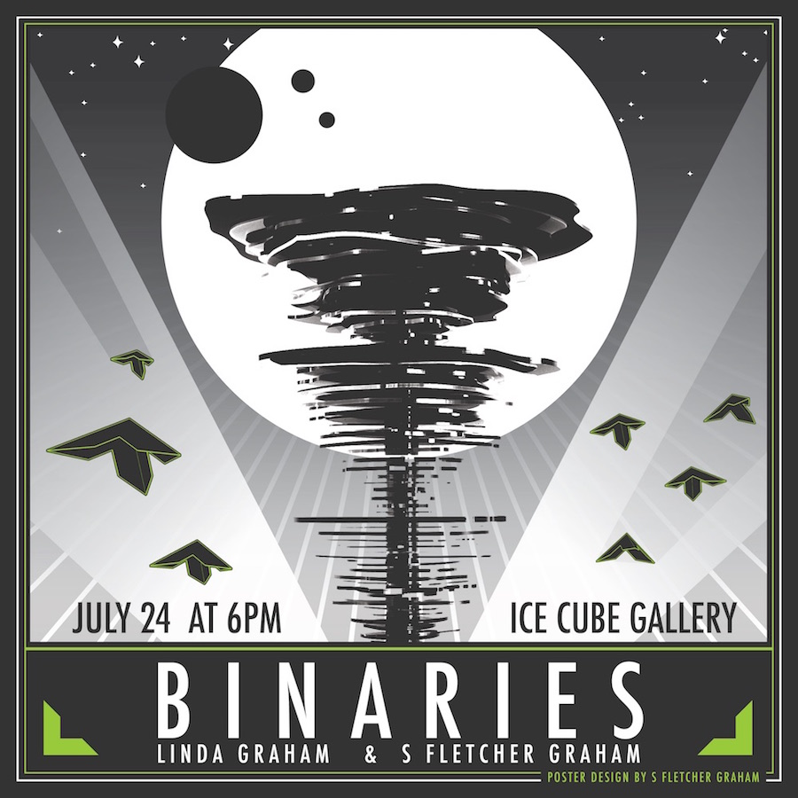
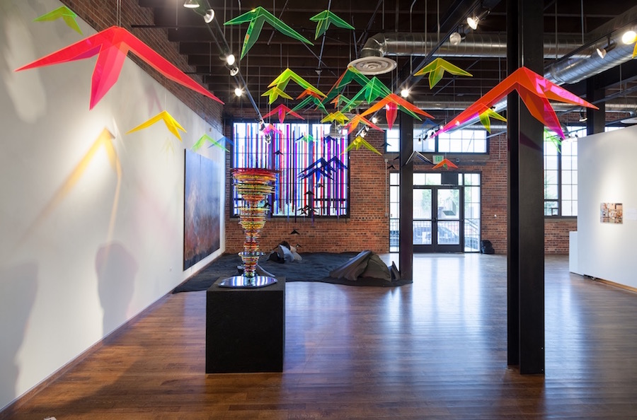
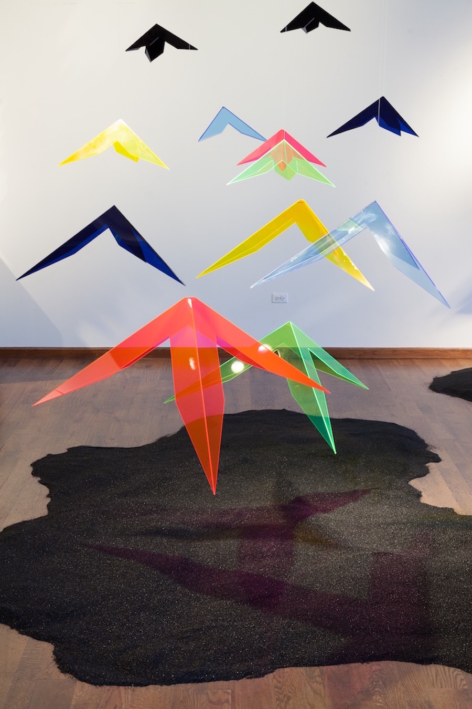
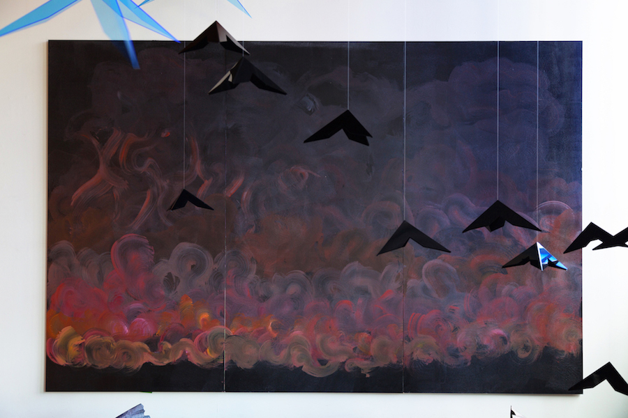
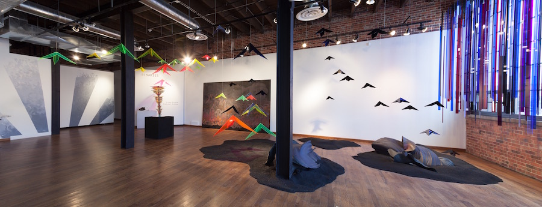
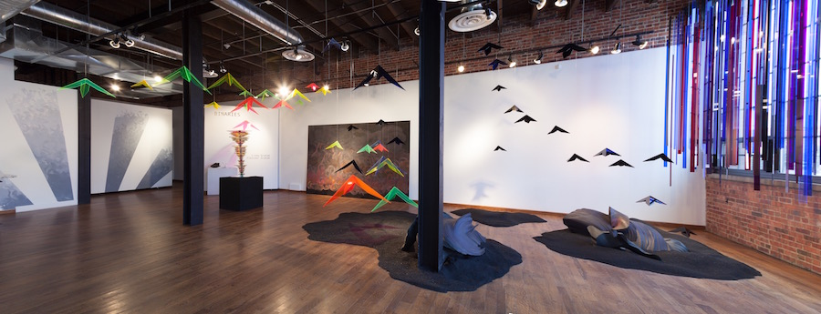

Binaries is a collaboration between me and my Grandmother, Linda Melvin Graham, which was shown at Ice Cube Gallery in July of 2015. We explored the effects of humans on the planet and the possible resulting mass extinction.
One of the main ideas is that life is resilient and has a tendency to continue in some form. The show featured a short film (entitled "Transitions") by yours truly, depicting an optimistic, interplanetary future for humans.



 
Special thanks to Jo Welborn, Practical Installation Sorceress.

Special thanks to Jo Welborn, Practical Installation Sorceress.
See a write-up by Michael Poglia